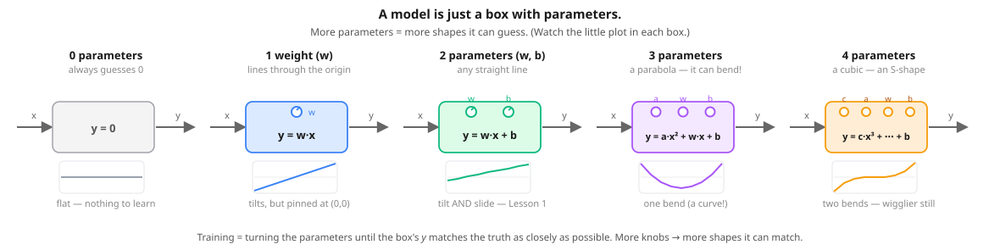

Before transformers, before any of the fancy stuff: what does "learning" actually mean?
Here is a model in one line: tip = 0.2 × bill. Hand it a £50 bill and it answers £10. That 0.2 is the only weight — and "learning" is just nudging that one number until the guesses match reality.
This is Step 1 of the journey that ends at PRAGMA, Revolut's banking Transformer. Every later lesson — embeddings, attention, masking — is built on the one idea you'll meet here: a model is a bag of numbers, and learning is just nudging those numbers to be less wrong. Get this and the rest is variations on a theme.
A model is just:
Training means: show it examples, see how wrong it is, nudge the numbers to be less wrong, repeat thousands of times. That's the whole game.
Before we jump to the formula, picture a model as a little box with weights. An input goes in (we'll call it x); an answer comes out (we'll call it y). The weights change what the box does. More weights = more shapes the box can guess.

Lesson 1's model is the green 2-parameter box: a weight and a bias (w and b), one rule — y = w·x + b. (The purple and amber boxes are a sneak peek — you'll fit the purple 3-parameter parabola yourself in L1.5.) The w is a weight — it multiplies the input; the b is a bias — it shifts the answer up or down. Together, a model's weights and biases are its parameters: the numbers it learns. Training = nudging that weight and bias until the box's guesses match the truth as closely as possible.
The data below comes from a secret rule — y = 2x + 1 — that the model doesn't know. Its job is to figure that rule out by looking at example pairs.
w and b sliders below. Watch the blue line shift. Try to align it with the green points (the truth). When you're close, the loss number gets small. Then hit Auto-train and let the model find it itself.
Behind that "Auto-train" button is exactly this loop (in PyTorch). It is identical for any model — a linear regression, an embedding, a Transformer, anything with trainable weights.
for step in range(1000):
y_pred = w * x + b # 1. guess
loss = ((y_pred - y_true) ** 2).mean() # 2. how wrong?
opt.zero_grad() # 3. clear old notes
loss.backward() # 4. which way is "less wrong"?
opt.step() # 5. nudge w and b a littleThat step-4 line computes the gradient. Don't let the word scare you — a gradient is just "which way to nudge each weight, and how hard, to make the loss smaller." Step 5 then takes exactly that nudge. (We unpack it slowly later; for now, "gradient = the downhill direction" is all you need.)
Memorise these five lines. You will see them again — unchanged — in Lesson 2, Lesson 4, and PRAGMA itself.
x = torch.tensor([1., 2., 3., 4., 5., 6., 7., 8.])
y_true = 2 * x + 1 # the rule the model never seesEight examples. The model only sees x and y_true — never the formula.
w = torch.tensor(0.0, requires_grad=True)
b = torch.tensor(0.0, requires_grad=True)Two numbers. Both start at 0 — totally wrong. The requires_grad=True flag tells PyTorch "these are the weights to turn".
opt = torch.optim.SGD([w, b], lr=0.05)You just met the gradient — the downhill direction. SGD is simply the rule that takes a step that way, over and over, until the loss stops dropping. (It stands for Stochastic Gradient Descent; "stochastic" just means it can use a few examples at a time rather than all of them.) The lr — learning rate — is how big each downhill step is.
The widget above (and the playground below) use the first 5 points x = [1,2,3,4,5], so y_true = [3, 5, 7, 9, 11]. At step 0 (with w=0, b=0) the model predicts all zeros. The errors are [-3, -5, -7, -9, -11], squared [9, 25, 49, 81, 121], summed 285, averaged 285 / 5 = 57 — exactly the "loss" the widget shows at the start. (The full notebook uses all 8 points, which averages to 62.5 — same idea, a few more points.)
w and b with the sliders below, and watch the loss math compute live. The slider widget above shows the same thing graphically; this shows the actual arithmetic the model runs.x = [1, 2, 3, 4, 5] y_true = [3, 5, 7, 9, 11] # the rule: y = 2x + 1 w = 0.0 b = 0.0 # Predict and measure how wrong, for each example y_pred = [w*xi + b for xi in x] errors = [y_pred[i] - y_true[i] for i in range(5)] sq = [e*e for e in errors] loss = sum(sq) / 5 # Mean Squared Error print(f"loss = {loss:.2f}")
w=2.0, b=1.0. What's the loss?
Loss ≈ 0.00. The secret rule is y = 2x + 1 — exactly what our model is when w=2, b=1. So every prediction matches every truth perfectly; every error is 0; the mean of zeros is 0. You just found the answer training is searching for.
w=0, b=0. The loss should be huge.
Loss = 57. With w=b=0, the model predicts 0 for every input. The errors are [-3, -5, -7, -9, -11]; squared they become [9, 25, 49, 81, 121]; their sum is 285; divided by 5 gives 57. This is where training starts — at the worst possible loss, then climbs down.
w=2, b=0. Loss is small but NOT zero. Why?
Loss = 1.0. The slope is right (2) but the intercept is wrong (0 instead of 1). So y_pred is always exactly 1 unit below y_true. Each error is -1; squared is 1; mean is 1. Right shape, wrong offset.
(w, b) that gives loss less than 0.1 by hand.
Anything near (2.0, 1.0) works — try (1.95, 1.1) or (2.05, 0.9). The loss landscape is a smooth bowl with its minimum at the secret values; anywhere close, the loss is tiny. This is what gradient descent does automatically — except in ~10 steps instead of by hand.
Plain error won't work: a +5 miss and a −5 miss would cancel to 0, telling you the model is perfect when it isn't. You need every miss to count as positive.
Absolute value (|error|) does make everything positive and is sometimes used. But squaring has a bonus: it has a smooth, clean slope everywhere (great for gradient descent) and it leans hard on big mistakes — a miss of 10 hurts 100×, not 10×, so training rushes to fix the worst errors first.
First, the one word that makes these click: the gradient is just "which way to nudge each weight to make the loss smaller" — and by how much. With that in hand, the three lines (in the order they run) are:
opt.zero_grad() — clear last step's gradient notes so this step starts fresh (otherwise they'd pile up).loss.backward() — PyTorch computes the gradient of the loss with respect to w and b. It answers "if I increase this weight a little, does the loss go up or down?"opt.step() — nudge each weight in the direction opposite its gradient (because we want loss to go down).For more on why this works, see Lesson 1c, where we open up gradient descent and compute the gradients by hand.
Watching the slider, you might wonder how long training really takes. I trained this exact 2-parameter model with lr=0.01 and logged the loss every order of magnitude:
| step | loss | w | b |
|---|---|---|---|
| 1 | 121.0 | 1.110 | 0.200 |
| 10 | 0.075 | 2.106 | 0.400 |
| 100 | 0.036 | 2.074 | 0.581 |
| 1000 | 0.00003 | 2.002 | 0.989 |
| 10000 | ~0 | 2.000 | 1.000 |
Two things jump out: by step 10 the loss is already tiny (the model basically nails the slope). The remaining 990 steps are just sliding b the last bit toward 1.0. Big models on hard problems need millions of steps; tiny problems need almost none.
That's it. Everything else in this course is decoration.
Scroll back to the line-fitting playground and predict each result before you test it.
It overshoots and the loss explodes instead of settling — too big a step leaps over the valley bottom.
w and b far from the truth, then Auto-train with a small learning rate. Does it still find w≈2, b≈1?Yes — it just takes more steps. Gradient descent walks downhill from wherever it starts.
w=2 and b=1 by hand. What's the loss, and why?~0 — you've matched the secret rule y = 2x + 1, so every guess is right.
It crawls — converges very slowly over many steps. Too-small steps waste time.
b, leaving w wrong. Can you ever reach loss 0?No — the wrong slope means the line can't match the data no matter the intercept. Both knobs matter.
w and b. What rule did the model recover?≈ y = 2x + 1 — the secret rule it never saw. That recovery is learning.
No — with noise the best line still has some error, so loss bottoms out above 0. Real data is never perfectly on a line.
w and b) that turns an input into a guess.